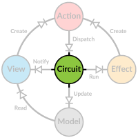

Action Handlers

For dispatched actions to actually do anything, they need to be processed by action handlers. In principle, an action handler is a pure function of type
(model, action) => model that takes in the current model and the dispatched action, and returns a new model. In practice, the handlers are typically partial
functions that process different (related) actions, access only part of the model through a ModelRW trait and return an ActionResult.
In the Circuit
All action handling takes place within the Circuit, which has a single actionHandler that takes care of all actions. Actually your application must define
this function, typically by combining multiple ActionHandler classes together to form the final partial function that then handles the actions. There is
also a baseHandler that handles any action that was not handled by the actionHandler, ensuring we don't get a runtime MatchError.
You may define your action handlers within your application Circuit singleton object as anonymous classes, or use external classes. The former is simpler to
implement while the latter is better for independent testing. In our examples the handlers are defined using both strategies.
Learn by Example
Let's use a bit more complex example for building our action handlers, to show how you would do it in real-life applications. Our data will represent a hierarchical directory structure with both files and directories. This can be defined as a trait and two case classes.
sealed trait FileNode {
def id: String
def name: String
def children: IndexedSeq[FileNode]
def isDirectory: Boolean
}
final case class Directory(
id: String,
name: String,
children: IndexedSeq[FileNode] = IndexedSeq.empty) extends FileNode {
override def isDirectory = true
}
final case class File(id: String, name: String) extends FileNode {
val children = IndexedSeq.empty[FileNode]
override def isDirectory = false
}
In our root model we don't want to have anything like a Directory so let's further define an intermediate model Tree to hold the root of the hierarchy and
also some additional data.
case class Tree(root: Directory, selected: Seq[String])
// Define the root of our application model
case class RootModel(tree: Tree)
And some actions, too!
case class ReplaceTree(newTree: Directory)
case class AddNode(path: Seq[String], node: FileNode)
case class RemoveNode(path: Seq[String])
case class ReplaceNode(path: Seq[String], node: FileNode)
case class Select(selected: Seq[String])
Writing an Action Handler
Our action handler needs to deal with the directory hierarchy, so we need to zoom into it in our ActionHandler. To get started, we handle only the most
simple action of replacing the whole tree.
// zoom into the model, providing access only to the `root` directory of the tree
val treeHandler = new ActionHandler(
zoomRW(_.tree)((m, v) => m.copy(tree = v))
.zoomRW(_.root)((m, v) => m.copy(root = v))) {
override def handle = {
case ReplaceTree(newTree) =>
updated(newTree)
}
}
override val actionHandler = combineHandlers(treeHandler)
The zoom call could've been written as a single
zoomRW(_.tree.root)((m, v) => m.copy(tree = m.tree.copy(root = v)))
but it's easier to understand when it's split up.
Now our application is ready to handle dispatched ReplaceTree actions successfully!
ActionHandler is just an utility class providing common patterns for defining action handlers. If we look at its code, it's rather straightforward:
abstract class ActionHandler[M, T](val modelRW: ModelRW[M, T]) {
def handle: PartialFunction[AnyRef, ActionResult[M]]
def value: T = modelRW.value
def updated(newValue: T): ActionResult[M] = ModelUpdate(modelRW.updated(newValue))
...
}
Deep Diving
The handler for ReplaceTree was trivial, since there was no need to dive into the directory hierarchy, but how would something like AddNode be handled? It
gets a path as a parameter, defining the directory we are interested in. This is actually a sequence of identifiers, so we need to walk down the hierarchy to
reach our goal. Because the same is needed in the other actions as well, let's define a common function to perform this traversal.
We are actually interested in the children sequence of the directory, not the directory itself, so our traversal function should return a ModelRW that
allows us to manipulate that indexed sequence directly. It may also fail to find a valid path, so we should wrap the result in an Option.
def zoomToChildren[M](path: Seq[String], rw: ModelRW[M, Directory])
: Option[ModelRW[M, IndexedSeq[FileNode]]] = {
if (path.isEmpty) {
Some(rw.zoomRW(_.children)((m, v) => m.copy(children = v)))
} else {
???
}
}
In the trivial case (and at the end of the recursion) the path is empty and we'll return a ModelRW for the current directory's children.
Let's take a look at the full implementation.
def zoomToChildren[M](path: Seq[String], rw: ModelRW[M, Directory])
: Option[ModelRW[M, IndexedSeq[FileNode]]] = {
if (path.isEmpty) {
Some(rw.zoomRW(_.children)((m, v) => m.copy(children = v)))
} else {
// find the index for the next directory in the path and make sure it's a directory
rw.value.children.indexWhere(n => n.id == path.head && n.isDirectory) match {
case -1 =>
// should not happen!
None
case idx =>
// zoom into the directory position given by `idx` and continue recursion
zoomToChildren(path.tail, rw.zoomRW(_.children(idx).asInstanceOf[Directory])((m, v) =>
m.copy(children = (m.children.take(idx) :+ v) ++ m.children.drop(idx + 1))
))
}
}
}
First we try to find the index to the children sequence, where the next directory in our path resides and depending on the result we either return None for
failure, or dive deeper into the hierarchy by recursively calling the same function again with am updated reader/writer and path. The writer function copies all
nodes preceding the one we are interested in, then adds a new node and then any nodes succeeding the original node.
Now we are ready to write action handlers for rest of the tree manipulation functions.
case AddNode(path, node) =>
// zoom to the directory and add new node at the end of its children list
zoomToChildren(path.tail, modelRW) match {
case Some(rw) => ModelUpdate(rw.updated(rw.value :+ node))
case None => noChange
}
With the helper function to navigate the hierarchy the actual implementation of AddNode turns out to be quite trivial. Since we have access to the children
of the parent directory, we simply need to add the new node at the end of it.
case RemoveNode(path) =>
if (path.init.nonEmpty) {
// zoom to parent directory and remove node from its children list
val nodeId = path.last
zoomToChildren(path.init.tail, modelRW) match {
case Some(rw) => ModelUpdate(rw.updated(rw.value.filterNot(_.id == nodeId)))
case None => noChange
}
} else {
// cannot remove root
noChange
}
case ReplaceNode(path, node) =>
if (path.init.nonEmpty) {
// zoom to parent directory and replace node in its children list with a new one
val nodeId = path.last
zoomToChildren(path.init.tail, modelRW) match {
case Some(rw) => ModelUpdate(rw.updated(rw.value.map(n => if (n.id == nodeId) node else n)))
case None => noChange
}
} else {
// cannot replace root
noChange
}
Removal and replacement are almost identical, except for the final transformation of the children sequence. Here we also prevent removal or change of the root
directory.
Handling Selection
As the Select action affects the Tree and not something under the root directory, we cannot handle it within the treeHandler. We'll need another action
handler for it.
val selectionHandler = new ActionHandler(
zoomRW(_.tree)((m, v) => m.copy(tree = v))
.zoomRW(_.selected)((m, v) => m.copy(selected = v))) {
override def handle = {
case Select(sel) => updated(sel)
}
}
override val actionHandler = combineHandlers(treeHandler, selectionHandler)
Again we zoom into the tree but this time we continue to selected. The handler implementation is as trivial as with ReplaceTree. To inform Circuit about
this new handler, we include it into the call to the combineHandlers function.
Testing
As action handlers are pure functions, testing them is rather trivial. Although you can define handlers inline within your Circuit implementation, it's
usually better to have them as separate classes for easy testing. For example:
class DirectoryTreeHandler[M](modelRW: ModelRW[M, Directory]) extends ActionHandler(modelRW) {
override def handle = { ... }
}
object AppCircuit extends Circuit[RootModel] {
val treeHandler = new DirectoryTreeHandler(
zoomRW(_.tree)((m, v) => m.copy(tree = v))
.zoomRW(_.root)((m, v) => m.copy(root = v)))
...
}
In your test class you can instantiate the handler by supplying it with an appropriate reader/writer. Since the handler doesn't care about the root model type, usually easiest is just to use the data what your handler expects.
object DirectoryTreeHandlerTests extends TestSuite {
def tests = TestSuite {
// test data
val dir = Directory("/", "/", Vector(
Directory("2", "My files", Vector(
Directory("3", "Documents", Vector(
File("F3", "HaukiOnKala.doc")
))
)), File("F1", "boot.sys")
))
def build = new DirectoryTreeHandler(new RootModelRW(dir))
In individual test cases
- Build a handler instance.
- Call the
handlemethod with an appropriate action. - Check the result.
'RemoveNode - {
val handler = build
val result = handler.handle(RemoveNode(Seq("/", "2")))
assertMatch(result) {
case ModelUpdate(Directory("/", "/", Vector(File("F1", "boot.sys")))) =>
}
}
If your handler returns any effects, you can safely just ignore them in your test.